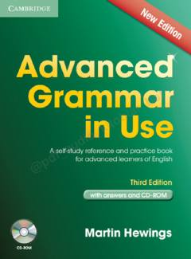

AGIngliz tili grammatikasini chuqur o'rganish uchun mo'ljallangan mukammal qo'llanma.
Ushbu kitob ingliz tilini chuqur o'rganayotganlar uchun mo'ljallangan mukammal grammatika qo'llanmasidir. Unda nazariy qoidalar va ularni mustahkamlash uchun amaliy mashqlar jamlangan bo'lib, mustaqil o'qish uchun juda qulay.